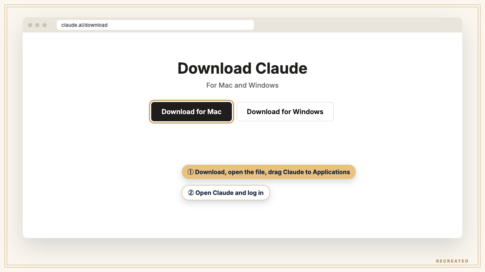
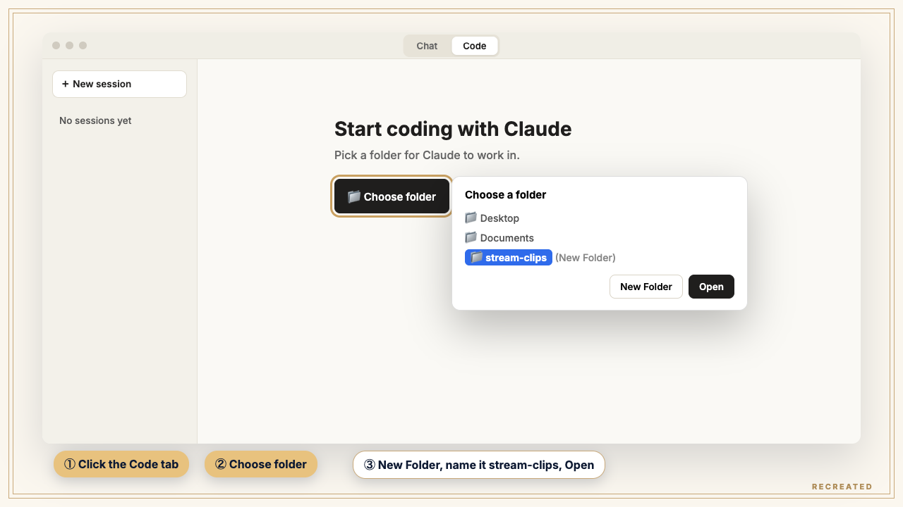
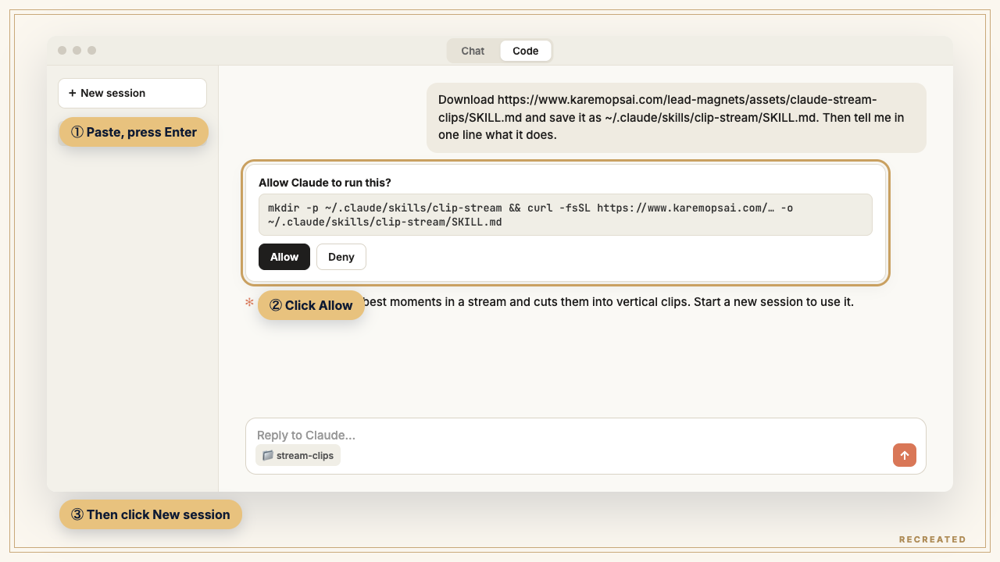
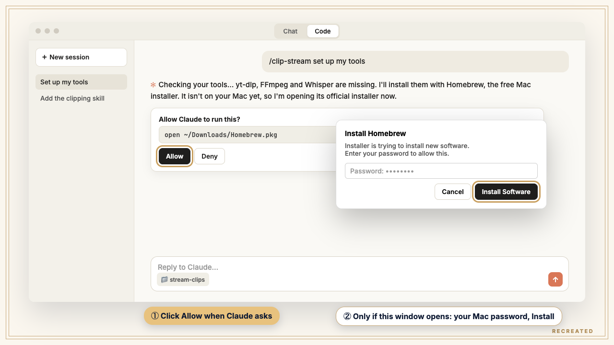
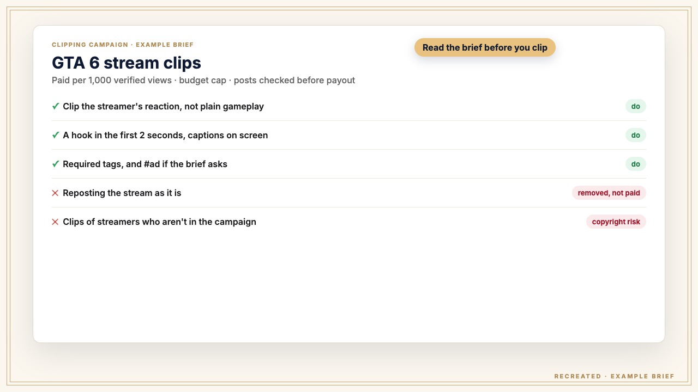
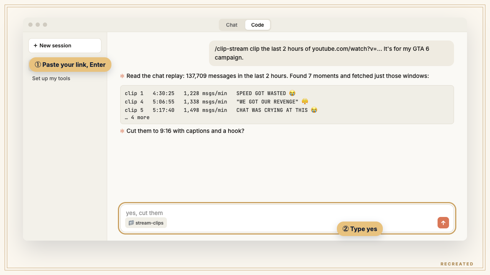
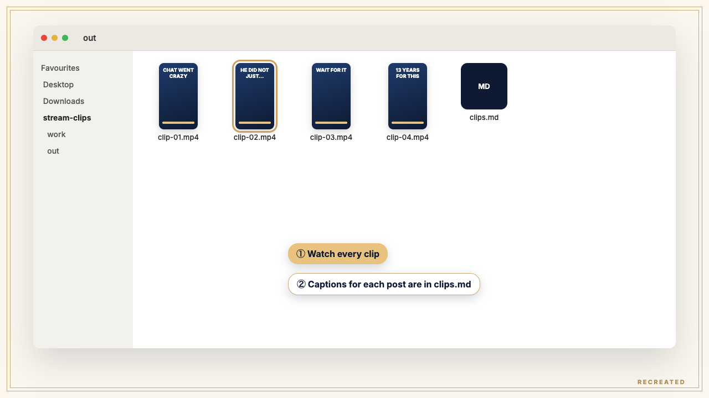
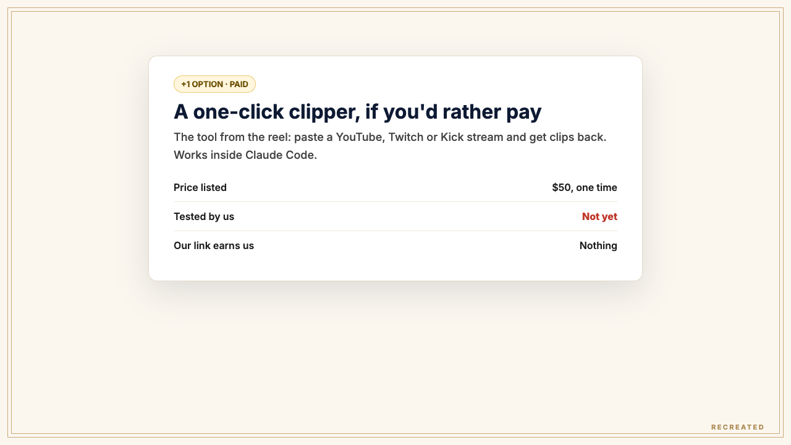

The full setup from the reel. Paste a stream link: Claude Code reads the chat replay, finds the moments where chat went wild, and cuts them into vertical clips with captions and a hook. Free tools, on your own computer.الإعداد الكامل من الفيديو. الصق رابط البثّ: يقرأ Claude Code إعادة المحادثة، ويجد اللحظات التي جُنّت فيها المحادثة، ويقصّها مقاطع عمودية مع ترجمة وافتتاحية. أدوات مجانية، على جهازك.
Download https://www.karemopsai.com/lead-magnets/assets/claude-stream-clips/SKILL.md and save it as ~/.claude/skills/clip-stream/SKILL.md. Then tell me in one line what it does.
All inside the Claude app, no Terminal: add the free clipping skill with one message, let Claude Code set up the tools, pick a clipping campaign, paste a stream link and get 9:16 clips with captions. Plus where campaigns pay per 1,000 views, their rules, 6 ready prompts and a paid one-click option.كل شيء داخل تطبيق Claude بلا Terminal: أضف مهارة القصّ المجانية برسالة واحدة، ودع Claude Code يجهّز الأدوات، واختر حملة مقاطع، والصق رابط البثّ لتحصل على مقاطع 9:16 مع ترجمة. ومعها أين تدفع الحملات لكل 1,000 مشاهدة، وقواعدها، و6 أوامر جاهزة، وخيار مدفوع بنقرة واحدة.
Every big streamer is playing GTA 6 right now, and brands and streamers pay people to clip them: clipping campaigns pay per 1,000 views on clips you post on your own accounts. The hard part is finding the good moments in a 6-hour stream. This guide gives you a free skill that does it for you.كل صانع محتوى كبير يلعب GTA 6 الآن، والعلامات التجارية وأصحاب البثّ يدفعون لمن يقصّ بثوثهم: حملات المقاطع تدفع لكل 1,000 مشاهدة على المقاطع التي تنشرها على حساباتك. الصعب هو إيجاد اللحظات الجيدة في بثّ مدته 6 ساعات. يعطيك هذا الدليل مهارة مجانية تفعل ذلك عنك.
How it finds them: when something big happens on stream, chat explodes. The skill reads the chat replay, finds the seconds where messages suddenly speed up and go ALL CAPS, and cuts the 30 seconds around each one. No chat replay (Twitch, Kick)? It listens for the loudest moments instead. Our own run on a real GTA 6 stream: the last 2 hours had 137,709 chat messages, up to 1,507 a minute at the peak. It found 7 moments, and finding them plus fetching just those 7 clip windows took 35 seconds.كيف تجدها: حين يحدث شيء كبير في البثّ تنفجر المحادثة. تقرأ المهارة إعادة المحادثة، وتجد الثواني التي تتسارع فيها الرسائل فجأة وتصبح بأحرف كبيرة، وتقصّ الثلاثين ثانية حول كل منها. لا توجد إعادة محادثة (Twitch وKick)؟ تستمع لأعلى اللحظات صوتًا بدلًا منها. في تجربتنا على بثّ حقيقي لـ GTA 6: آخر ساعتين فيهما 137,709 رسالة، حتى 1,507 رسالة في الدقيقة عند الذروة. وجدت 7 لحظات، واستغرق إيجادها وتنزيل نوافذ هذه المقاطع السبعة فقط 35 ثانية.
Built only from free tools: Claude Code runs it, yt-dlp downloads the stream and its chat, FFmpeg cuts and fits each clip to 9:16, Whisper writes the captions. We wrote the skill from scratch and scanned it with NVIDIA SkillSpector: SAFE, 0 issues. Want a one-click paid tool instead? It's at the end, clearly marked.مبنية فقط من أدوات مجانية: Claude Code يشغّلها، وyt-dlp ينزّل البثّ ومحادثته، وFFmpeg يقصّ كل مقطع ويضبطه على 9:16، وWhisper يكتب الترجمة. كتبنا المهارة من الصفر وفحصناها بأداة NVIDIA SkillSpector: النتيجة SAFE، بلا أي مشكلة. تريد أداة مدفوعة بنقرة واحدة بدلًا منها؟ تجدها في النهاية بعلامة واضحة.
Never used Claude Code? This guide is for you. It all happens inside the Claude app: you paste a message and click Allow, no Terminal and no code. Every step has a screen with a gold ring on what to click. Steps 1 to 4 happen once. After that, every new stream is steps 5 to 10.لم تستخدم Claude Code من قبل؟ هذا الدليل لك. كل شيء داخل تطبيق Claude: تلصق رسالة وتضغط Allow، بلا Terminal وبلا كود. لكل خطوة شاشة فيها حلقة ذهبية على ما تضغطه. الخطوات من 1 إلى 4 مرة واحدة فقط. بعدها كل بثّ جديد هو الخطوات من 5 إلى 10.
Open the link below and download the Claude app for your computer. Open the file, drag Claude into Applications (on Windows, run the installer), open it and log in with your Claude account. Everything in this guide happens inside this app: no Terminal, no code.افتح الرابط أدناه ونزّل تطبيق Claude لجهازك. افتح الملف واسحب Claude إلى Applications (في Windows شغّل المثبّت)، ثم افتحه وسجّل الدخول بحساب Claude. كل ما في هذا الدليل يحدث داخل هذا التطبيق: بلا Terminal وبلا كود.

At the top of the app, click Code. Click Choose folder, then New Folder, name it stream-clips and click Open. This is where your clips will be saved. Claude only works inside this folder.أعلى التطبيق اضغط Code. اضغط Choose folder ثم New Folder، وسمّه stream-clips واضغط Open. هنا ستُحفظ مقاطعك، ويعمل Claude داخل هذا المجلد فقط.

A skill is one text file that teaches Claude Code a job. Copy the message below, paste it in the box at the bottom and press Enter. When Claude asks to run a command, click Allow. Then click New session at the top left, so Claude loads the skill. Want to read the skill first? Open the link: it's plain English.المهارة ملف نصي واحد يعلّم Claude Code مهمة. انسخ الرسالة أدناه والصقها في المربع أسفل الشاشة واضغط Enter. حين يطلب Claude تشغيل أمر اضغط Allow. ثم اضغط New session أعلى اليسار ليحمّل Claude المهارة. تريد قراءتها أولًا؟ افتح الرابط: إنجليزية بسيطة.
Download https://www.karemopsai.com/lead-magnets/assets/claude-stream-clips/SKILL.md and save it as ~/.claude/skills/clip-stream/SKILL.md. Then tell me in one line what it does.

In the new session, paste the line below and press Enter. Claude checks for yt-dlp (downloads streams), FFmpeg (cuts video) and Whisper (captions) and asks before installing each: click Allow. On a Mac it may open the Homebrew installer: click Continue and Install, and type your Mac password in that window only, never in the chat.في الجلسة الجديدة الصق السطر أدناه واضغط Enter. يتحقق Claude من yt-dlp (لتنزيل البثّ) وFFmpeg (لقصّ الفيديو) وWhisper (للترجمة) ويسألك قبل تثبيت كل منها: اضغط Allow. في Mac قد يفتح مثبّت Homebrew: اضغط Continue ثم Install، واكتب كلمة مرور جهازك في تلك النافذة فقط، لا في المحادثة أبدًا.
/clip-stream set up my tools

Campaigns pay per 1,000 views on clips you post on your own TikTok, Reels or Shorts. Open the links below, pick a GTA 6 or streamer campaign, and read its brief before you clip. Most briefs want the same thing: the streamer's reaction, a hook, captions, their tags and #ad. Reposting the stream as it is gets removed and isn't paid.الحملات تدفع لكل 1,000 مشاهدة على المقاطع التي تنشرها على TikTok أو Reels أو Shorts الخاصة بك. افتح الروابط أدناه، واختر حملة GTA 6 أو حملة صاحب بثّ، واقرأ شروطها قبل أن تقصّ. معظم الشروط تطلب الشيء نفسه: ردّة فعل صاحب البثّ، وافتتاحية، وترجمة، ووسومهم و#ad. إعادة نشر البثّ كما هو تُحذف ولا تُدفع.

Copy the message below, swap the [brackets] for the stream's link and your campaign, paste it in Claude Code and press Enter. Click Allow when it asks. It reads the chat replay first (the slow part: a 6 hour stream can take 45 minutes), finds the moments, then downloads only those 30 second windows, not the whole stream. Type yes to cut them.انسخ الرسالة أدناه، وضع رابط البثّ واسم حملتك مكان [الأقواس]، والصقها في Claude Code واضغط Enter. اضغط Allow حين يسأل. يقرأ إعادة المحادثة أولًا (الجزء البطيء: بثّ من 6 ساعات قد يستغرق 45 دقيقة)، ويجد اللحظات، ثم ينزّل نوافذ الثلاثين ثانية هذه فقط، لا البثّ كله. اكتب yes ليقصّها.
/clip-stream clip the last 2 hours of [paste the stream link]. It's for [campaign name].

This is what the skill does with the chat. It counts messages every second and gives extra weight to ALL CAPS, W, OMG, NO WAY and emojis. Where the line jumps, something happened. Chat reacts 10 to 15 seconds late, so each clip starts about 16 seconds before chat starts rising and ends 2 seconds after the peak: 15 to 45 seconds, with the build-up and the reaction.هذا ما تفعله المهارة بالمحادثة. تعدّ الرسائل كل ثانية وتعطي وزنًا إضافيًا للأحرف الكبيرة وW وOMG وNO WAY والرموز التعبيرية. حيث يقفز الخط حدث شيء ما. المحادثة تتفاعل متأخرة من 10 إلى 15 ثانية، لذلك يبدأ كل مقطع قبل بدء ارتفاع المحادثة بنحو 16 ثانية وينتهي بعد الذروة بثانيتين: من 15 إلى 45 ثانية، مع التمهيد وردّة الفعل.
Streams are wide, phones are tall. Claude looks at a frame, finds the streamer's face cam, and builds the clipper layout: the face cam on top over a blurred fill, the gameplay below. No face cam? The stream sits in the middle over a blurred copy. Black loading screens get cut out.البثّ عريض والهاتف طويل. ينظر Claude إلى إطار من البثّ، ويجد كاميرا وجه صاحب البثّ، ويبني تصميم المقاطع المعتاد: الكاميرا في الأعلى فوق خلفية ضبابية، واللعب في الأسفل. لا توجد كاميرا وجه؟ يوضع البثّ في الوسط فوق نسخة ضبابية منه. وتُحذف شاشات التحميل السوداء.
Whisper writes the captions from what the streamer says. Claude Code writes 3 hook lines for each clip from what happened and what chat said, and you pick one. The hook sits at the top for the first 2 seconds, the captions run low, away from the face.يكتب Whisper الترجمة مما يقوله صاحب البثّ. ويكتب Claude Code ثلاث افتتاحيات لكل مقطع مما حدث وما قالته المحادثة، وأنت تختار واحدة. الافتتاحية في الأعلى أول ثانيتين، والترجمة في الأسفل بعيدًا عن الوجه.
Claude opens the out folder for you: your clips are there, with a clips.md file that has a post caption for each one (with the streamer's credit and the campaign's tags). Watch every clip, keep the good ones, and post them the way the campaign's brief says.يفتح لك Claude مجلد out: مقاطعك فيه، ومعها ملف clips.md فيه نص منشور لكل مقطع (مع ذكر صاحب البثّ ووسوم الحملة). شاهد كل مقطع، واحتفظ بالجيدة، وانشرها كما تقول شروط الحملة.

Rather not set anything up? The tool from the reel, Creago, says you paste a YouTube, Twitch or Kick stream and get clips back, inside Claude Code. Its site lists it at $50, one time, no subscription. We haven't tested it ourselves, and this link earns us nothing. The free skill above does the same job.لا تريد إعداد أي شيء؟ الأداة التي ذُكرت في الفيديو، Creago، تقول إنك تلصق بثّ YouTube أو Twitch أو Kick وتحصل على المقاطع، داخل Claude Code. موقعها يعرض سعرها 50 دولارًا مرة واحدة بلا اشتراك. لم نجرّبها بأنفسنا، وهذا الرابط لا يكسبنا شيئًا. المهارة المجانية أعلاه تقوم بالعمل نفسه.

انسخ الأوامر والنصوص كما هي باللغة الإنجليزية، فهي تعمل بدقة أكبر.
/clip-stream clip the last 2 hours of [paste the stream link]. It's for [campaign name]. Find 7 moments, 9:16, captions and a hook on each.
/clip-stream clip [paste the Twitch or Kick VOD link], from [1:00:00] to [3:00:00]. There's no chat replay, so use the audio to find the loud moments.
/clip-stream for every clip, also make a centered version: the whole stream in the middle over a blurred copy, no face cam split.
/clip-stream write 5 new hooks for clip [3], each under 8 words, based on what happens and what chat said. Then redo the clip with the one I pick.
/clip-stream from the moments you found, keep only the 3 strongest where the streamer reacts on camera. Drop anything that's just gameplay.
/clip-stream write a post caption for each clip in out/: a one-line hook, credit [@streamer], the campaign's tags [#tag1 #tag2], and #ad.
Clip one stream this week for a campaign you've joined, post the 3 best clips, and see which hook gets the views.قصّ بثًّا واحدًا هذا الأسبوع لحملة انضممت إليها، وانشر أفضل 3 مقاطع، وانظر أي افتتاحية تجلب المشاهدات.
AI operator and educator. I build AI systems for business owners: content, ads and automation, with Claude Code at the center. If you want it built for you, DM me.مشغّل ومعلّم في مجال الذكاء الاصطناعي. أبني أنظمة ذكاء اصطناعي لأصحاب الأعمال في المحتوى والإعلانات والأتمتة، ويكون Claude Code في قلبها. إذا أردت أن أبنيها لك، راسلني.